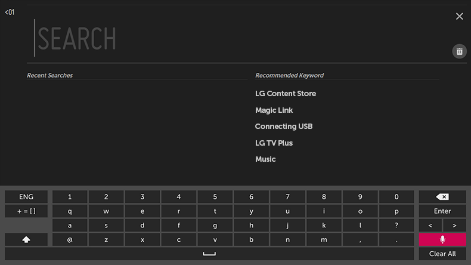
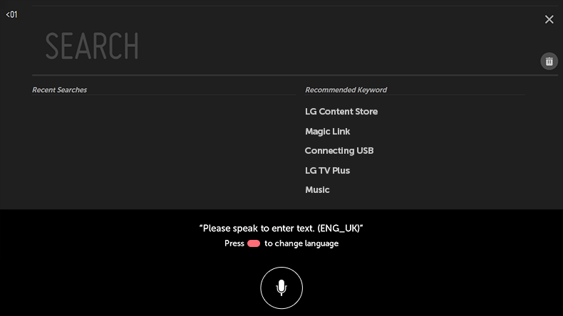
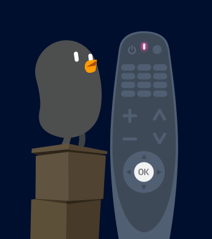
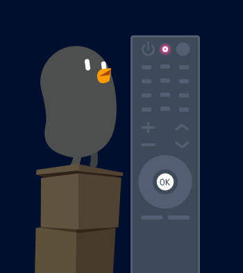
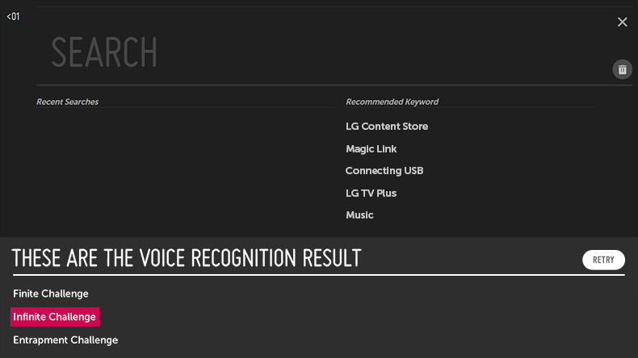

Introducción de texto mediante la función Voz a texto
Puede introducir texto en un campo de texto mediante la función de reconocimiento de voz.
Seleccione el botón en la pantalla del teclado para cambiar al modo de entrada por voz.
Seleccione el botón en la pantalla del teclado para cambiar al modo de entrada por voz.
Esta función solo está disponible en algunos modelos.
-
Desplace el puntero del control remoto Magic hasta el cuadro de texto para abrir el teclado virtual.

- Pulse el botón en el teclado virtual.
-
Una vez que se abra la ventana de información del reconocimiento de voz como se muestra a continuación, hable por el micrófono del mando a distancia lentamente y con claridad.

 
-
Si hay palabras similares a las que ha dicho, puede aparecer una lista con varios resultados, como se muestra a continuación.
Si no obtiene los resultados que desea, pulse INTENTAR OTRA VEZ para intentarlo de nuevo.
Seleccione un resultado, que se mostrará en el cuadro de texto.

Precauciones que se deben tener en cuenta al introducir texto por voz
Antes de utilizar la función Voz a texto, compruebe la conexión a la red.
Es posible cambiar el idioma en 
 General Idioma (Language) Idioma del menú.
Para cambiar a otro idioma de reconocimiento de voz, pulse el botón
General Idioma (Language) Idioma del menú.
Para cambiar a otro idioma de reconocimiento de voz, pulse el botón  en la ventana de visualización de información del reconocimiento de voz.
en la ventana de visualización de información del reconocimiento de voz.
General Idioma (Language) Idioma del menú.
Para cambiar a otro idioma de reconocimiento de voz, pulse el botón en la ventana de visualización de información del reconocimiento de voz.
Puede usar esta función únicamente si acepta los términos del reconocimiento de voz.
La tasa de la función Voz a texto puede variar en función de las características del usuario (voz, pronunciación, entonación y velocidad) y del entorno (ruido y volumen de la TV).
Para mejorar la precisión de la función Voz a texto, debe hablar alto y claro a una distancia de unos 10 cm del micrófono del control remoto Magic.
El reconocimiento de voz no está disponible en ningún campo de introducción de contraseña ni en la barra de direcciones del Navegador web (se excluye la búsqueda general).